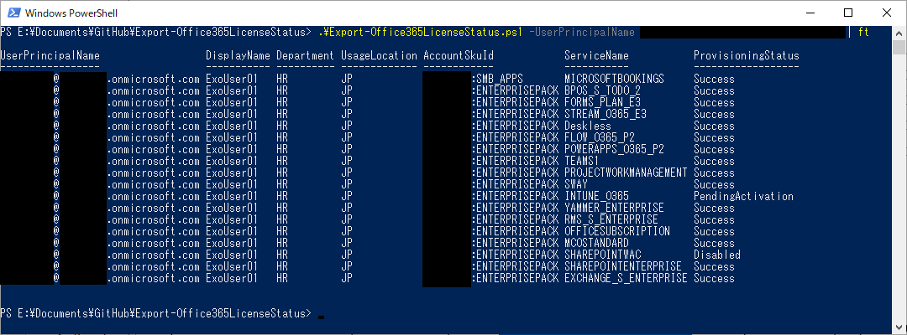
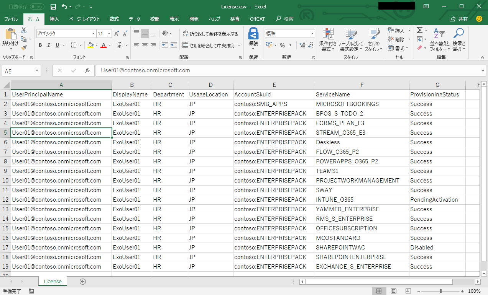

今回は Office 365 の管理者の皆様に、ライセンス付与状況を出力する PowerShell スクリプトをご紹介します。
Office 365 のライセンスを確認する場合、GUI ツールとしては Office 365 管理センターが利用できます。また、CUI ツールとしては MSOnline (Azure AD v1) モジュールの Get-MsolUser コマンドも利用できます。しかしながらどちらを利用しても、ライセンスに含まれる各サービス プランのステータスまで含めて一覧表示する機能が標準では用意されていません。
Get-MsolUser コマンドの出力内容を整形する PowerShell スクリプトを書くことで実現が可能ですが、Get-MsolUser コマンドの出力は複雑な構造となっているため、スクリプティングに慣れていないと実装が難しい状況です。例えば Get-MsolUser コマンドの Licenses 属性は、ユーザーに複数のライセンスが割り当てられていれば値が配列になっています。さらに Licenses 属性の子属性として ServiceStatus 属性があり、当該ライセンスに含まれている各サービス プランのステータスに関する情報が入れ子になっています。
このようなスクリプティングに関するお問い合わせを頻繁にお客様より頂くため、これまでのお問い合わせでのお客様のご要望を基に、私たちは Export-Office365LicenseStatus を GitHub に公開しました。この PowerShell スクリプトを使用すると、Office 365 の各ユーザーに割り当てられているライセンスや、ライセンスに含まれている各サービス プランのステータスを一覧表示することができます。CSV 出力機能も備えており、出力された CSV ファイルを Excel で開いてさらなる集計を行うことも可能です。
実行例を交えながら使い方をご紹介します。
ダウンロード方法
スクリプトは GitHub の releases ページからダウンロードできます。最新の Export-Office365LicenseStatus.zip をダウンロードしてください。準備
- スクリプトの実行には MSOnline (Azure AD v1) モジュールが必要です。インストールされていない場合はこちらのページを参考にしてインストールしてください。
- ダウンロードした Export-Office365LicenseStatus.zip を展開します。
- Export-Office365LicenseStatus.ps1 のプロパティをクリックします。
- (Windows 10) [全般] タブの [セキュリティ] の [許可する] のチェックをオンにします。[許可する] が表示されていない場合は特に操作は必要ありません。 (Windows 7) [全般] タブの [セキュリティ] の [ブロックの解除] をクリックします。[ブロックの解除] が表示されていない場合は特に操作は必要ありません。
- [OK] をクリックしてプロパティを閉じます。
- 管理者権限で Windows PowerShell を起動します。
- 以下のコマンドを実行します。
1
Get-ExecutionPolicy
- 実行結果が RemoteSigned / Bypass / Unrestricted 以外の値だった場合は、以下のコマンドを実行します。
確認が表示されたら「Y」を入力してください。
1
Set-ExecutionPolicy RemoteSigned
基本的な使い方
用途に応じて複数の使い方がありますので、いくつかのパターンをご紹介します。まずは Windows PowerShell を起動して Export-Office365LicenseStatus.ps1 を保存したフォルダーに移動しておいてください。なお Windows PowerShell を Azure Active Directory に接続していない (Connect-MsolService コマンドを実行していない) 状態でスクリプトを実行すると、認証ウィンドウが表示されますので、Office 365 テナントの全体管理者ユーザーの資格情報を入力してください。全ユーザーの情報をコンソール出力する
1 | .\Export-Office365LicenseStatus.ps1 -All $true |
特定のユーザーの情報をコンソール出力する
1 | \Export-Office365LicenseStatus.ps1 -UserPrincipalName User01@contoso.onmicrosoft.com |
特定のユーザーの情報を CSV に出力する
1 | .\Export-Office365LicenseStatus.ps1 -UserPrincipalName User01@contoso.onmicrosoft.com -CsvOutputPath C:\temp\License.csv |
ライセンスが割り当てられていないユーザーも含むすべてのユーザーの情報を CSV に出力し、指定されたパスにファイルが存在しても上書きする
1 | .\Export-Office365LicenseStatus.ps1 -All $true -CsvOutputPath C:\temp\License.csv -ExportNoLicenseUser -Force |
出力イメージ
コンソール出力の場合は、以下のように出力されます。ここでは見やすいようにスクリプトの実行結果を ft (Format-List) で表示しています。ちなみに ProvisioningStatus が Disabled になっているサービス プランは無効化されており、それ以外のものは有効化されています。
CSV 出力の場合は、Excel で表示すると以下のようになります。Excel のフィルタ機能もしくはピボット テーブル等で整形ください。

このほかにもパラメーターの組み合わせで異なる使い方が可能ですので、必要に応じてお試しください。
ライセンスの割り当てなどの管理を行う方法についてはこちらの記事をご参照ください。
なお Export-Office365LicenseStatus は弊社の製品・サービスではないため、スクリプト自体に関するサポートは弊社からは提供されません。スクリプト自体に対するフィードバックは GitHub の issues に投稿していただくようお願いいたします。ベスト エフォートとはなりますが弊社のエンジニアや有志の GitHub ユーザーが対応します。Export-Office365LicenseStatus はオープン ソースのため、読者の皆様からのプル リクエストも歓迎します。
今後も当ブログおよびサポート チームをよろしくお願いいたします。
※ 本情報の内容 (添付文書、リンク先などを含む) は、作成日時点でのものであり、予告なく変更される場合があります。
小間 竜太郎